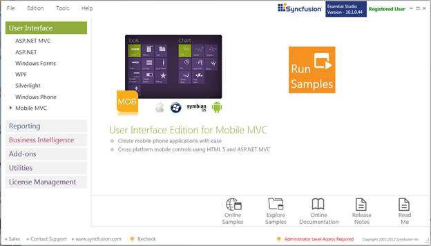
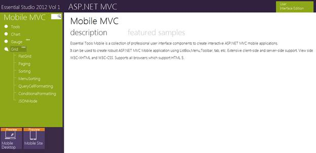

To view the samples, follow the steps below:
1. Click Start > All Programs > Syncfusion > Essential Studio <version number> > Dashboard. The Essential Studio Enterprise Edition window is displayed.

Figure 2: Syncfusion Essential Studio Dashboard
The User Interface Edition panel is selected by default.
2. Select the MOBILE MVC platform in the User Interface panel. The following options are displayed.
Run Samples—View the locally installed Mobile Grid samples for ASP.NET MVC using the sample browser
Online Samples—View the online Essential Grid samples for Mobile MVC
Explore Samples—Locate the Mobile Grid samples on the disk
Download Source Code—Download the source for ASP.NET MVC Mobile
Online Documentation—View the online Essential Grid documentation for Mobile MVC
Release Notes—View the release notes of MOBILE ASP.NET MVC
Read Me—View the read me content of User Interface Edition
You can view the samples in the following ways.
1. Click Run Samples. The Essential Studio for Mobile MVC sample browser is displayed.

Figure 3: Essential Studio Mobile MVC Edition Sample Browser
 Note: By default, Essential Tools for Mobile MVC
samples are displayed.
Note: By default, Essential Tools for Mobile MVC
samples are displayed.
2. Select any sample and browse through the features.
Source Code Location
Since this product is still in the preview mode, the source code will not be downloaded.